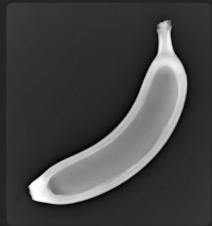

第一部分 图像形成与数字图像基础¶
图像从哪里来：图像形成与数字图像基础¶
核心问题
计算机看到的图像，不是 “照片”，而是由成像系统采集、采样、量化后得到的数字矩阵。
-
成像过程
-
真实三维世界
- 光照与物体反射
- 相机镜头成像
- 传感器接收光信号
-
转换为数字图像
-
数字图像表示
-
灰度图：二维矩阵
- 彩色图：三通道矩阵
- 图像本质：空间位置上的数值函数
需要理解的几个关键词
像素、分辨率、颜色空间、采样、量化、噪声、模糊、曝光、动态范围
引导性问题
为什么同一个场景，用不同手机拍出来的图像会不一样？
Banana Through Every Scan¶



树的 CT¶

同一个物体，为什么会有不同的图像？¶
观察现象
同一个香蕉，在普通照片、X 光、MRI、CT 中呈现出完全不同的样子。
普通照片
- 主要记录物体表面的颜色和亮度
- 依赖可见光反射
- 更接近人眼看到的结果
MRI 图像
- 反映组织中氢原子信号差异
- 对软组织成像效果较好
- 医学诊断中非常重要
X 光图像
- 反映射线穿透后的衰减差异
- 常用于观察内部结构
- 骨骼、金属等高密度区域更明显
CT 图像
- 从多个角度采集 X 光投影
- 通过重建算法得到断层图像
- 可以观察物体或人体内部切片
关键理解
图像不是 “客观世界本身”，而是某种成像机制下得到的信息表达。
以 CT 为例：图像可以是 “计算” 出来的¶
直观理解
普通照片通常是一次成像，而 CT 图像不是简单 “拍” 出来的，而是通过多个角度的测量数据重建出来的。
多角度投影数据 → 重建算法 → 断层图像
CT 采集什么？
- X 光从不同角度穿过物体
- 探测器记录射线衰减程度
- 得到一组投影数据
CT 重建什么？
- 反推出物体内部结构
- 得到二维切片图像
- 多张切片可组成三维体数据
关键点
有些图像不是直接拍摄得到的，而是由观测数据经过数学模型和算法重建得到的。
从 “成像” 到 “模型”：图像工程中的基本抽象¶
为什么要建立数学模型？
真实成像过程往往很复杂。为了让计算机能够处理图像，我们需要把成像过程抽象成可以计算、分析和优化的数学模型。

未知对象
- \(x\) : 真实图像或物体结构
- 可能是二维图像
- 也可能是三维体数据
观测结果
- \(y\) ：设备采集到的数据
- 可能是照片
- 也可能是投影、回波或传感器信号
关键理解
图像工程不是只处理 “已经存在的图像”，也研究图像是怎样被测量、形成和恢复出来的。
一个统一的成像模型¶
常见抽象
很多成像过程都可以写成：
- \(x\) ：真实图像或物体结构； A: 成像系统或测量过程；- \(y\) ：设备实际采集到的数据；
- \(n\) ：噪声、误差或干扰。
不同任务中的 \(A\)
- 普通拍照：相机成像过程；
- 图像模糊：模糊核或运动轨迹；
- CT 成像：多角度投影过程；
- 图像压缩：信息编码与丢失过程。
一句话
看似不同的图像问题，背后常常有相似的数学结构。
正问题与逆问题¶
正问题
已知真实图像 \(x\) 和成像系统 \(A\) ，求观测数据 \(y: x \longrightarrow y, \quad y = Ax + n\)
逆问题
已知观测数据 y 和成像系统 A，反过来恢复真实图像 \(x: y \longrightarrow x\)
正问题
- 模拟成像过程
- 通常比较直接 例如：清晰图像变成模糊图像
逆问题
- 从观测结果反推原因
- 通常更加困难 例如：模糊图像恢复清晰图像
一个简单例子：图像去噪¶
问题
观测图像 y 是真实图像 x 加上噪声得到的： \(y = x + n\)
恢复模型
只相信数据
- 直接取 \(x = y\)
- 噪声也被保留下来
正则过强
- 噪声减少
- 细节和边缘也可能被抹掉
一个简单例子：图像去模糊¶
问题
拍照时手抖、物体运动或镜头失焦，都可能导致图像模糊。
- \(x\) ：清晰图像；
- \(k\) ：模糊核；
- *：卷积操作；
- \(y\) ：观测到的模糊图像；
- \(n\) ：噪声或误差。
恢复目标
为什么难？
模糊会损失边缘和纹理等高频细节，而噪声又会干扰恢复过程。
去噪与去模糊有什么不同？¶
图像去噪
- 主要问题是随机扰动
- 图像结构大体还在
- 目标是去除噪声、保留细节
图像去模糊
- 细节被扩散或混合
- 边缘变宽，纹理变弱
- 目标是恢复丢失的高频信息
关键区别
去噪更多是 “去掉多出来的干扰”，去模糊更多是 “找回被混合掉的细节”。
一个简单例子：图像超分辨率¶
问题
低分辨率图像缺少细节，希望恢复出更高分辨率的图像。
- \(x\) ：高分辨率图像；
- \(D\) : 下采样过程；- \(y\) ：低分辨率图像；
- \(n\) ：噪声或误差。
恢复目标
课堂提问
电影里 “把模糊监控无限放大后看清车牌” 的情节，为什么现实中并不总是可行？
图像恢复中的共同结构¶
看似不同的问题
去噪、去模糊、超分辨率、CT 重建，看起来任务不同。
去噪 : \(y = x + n\)
去模糊 : \(y = k * x + n\)
超分辨率： \(y = Dx + n\)
CT 重建 : y = Ax + n
共同形式
课程观点
图像工程中很多问题不是孤立的，而是可以放在统一的建模框架下理解。
图像先验：什么样的图像更合理？¶
先验的含义
先验就是我们对 “自然图像通常具有哪些规律” 的经验判断。
传统图像先验
- 图像通常局部平滑
- 边缘处允许明显变化
- 梯度往往具有稀疏性
- 相似纹理可能重复出现
领域图像先验
- 医学图像有解剖结构规律
- 遥感图像有地物分布规律
- 人脸图像有五官结构规律
- 工业图像有规则纹理和缺陷模式
一句话
没有先验，很多逆问题无法稳定求解；先验越合适，恢复结果越可靠。
传统方法：人工设计先验¶
基本思路
传统图像恢复方法通常把先验写成一个显式的正则项：
常见正则项
- 平滑正则
- 全变差正则
特点
- 模型清楚
- 可解释性较强
- 便于数学分析
- 但表达能力有限
深度学习方法：从数据中学习先验¶
基本思路
深度学习方法不一定显式写出 \(R(x)\) ，而是从大量样本中学习图像规律。
- \(y\) ：低质量图像，如带噪、模糊、低分辨率图像；
- \(x\) ：目标图像，如清晰、干净、高分辨率图像；
- \(f_{\theta}\) ：由神经网络表示的恢复模型；
- \(\theta\) ：通过训练数据学习得到的参数。
理解方式
神经网络可以看作从数据中学习了一个复杂的图像先验或恢复规则。
传统方法与深度学习方法的对比¶
传统模型驱动方法
- 显式写出成像模型
- 显式设计正则项
- 可解释性较好
- 对数据依赖较少
- 复杂场景下能力有限
深度学习数据驱动方法
- 从数据中学习映射
- 表达能力强
- 效果常常更好
- 依赖数据和算力
- 泛化性和可解释性仍是挑战
发展趋势
现代图像工程越来越强调模型驱动与数据驱动的结合。
模型驱动与数据驱动的结合¶
一种现代思路
不是完全抛弃传统模型，而是把成像模型、优化算法和神经网络结合起来。
物理成像模型 + 优化思想 + 深度网络 \(\Longrightarrow\) 现代图像恢复方法
- 用 \(A\) 描述真实成像过程；
- 用数据保真项保证结果不偏离观测；
- 用神经网络学习复杂先验；
- 用迭代结构增强可解释性和稳定性。
课程主线
传统图像处理提供模型和思想，深度学习提供更强的表达能力。
从图像形成到图像处理¶
到目前为止，我们已经回答了第一个问题
图像从哪里来？
- 图像来自不同的成像机制；
- 数字图像来自采样和量化；
- 很多成像过程可以写成 \(y = Ax + n\) ;
- 从观测恢复图像往往是逆问题；
- 逆问题需要结合数据保真和图像先验。
下一讲
现实中的图像经常存在噪声、模糊、低对比度、光照不均等问题。
如何让图像变得更清楚、更适合后续分析？
这就进入第二部分：图像增强与滤波。
演示代码 — BGR 与 RGB 色彩空间¶
import cv2
import matplotlib.pyplot as plt
import numpy as np
# OpenCV 默认以 BGR 顺序读取图片
img_bgr = cv2.imread('../images/lena_color_512.png')
# 转换为 RGB 顺序以便用 matplotlib 正确显示
img_rgb = cv2.cvtColor(img_bgr, cv2.COLOR_BGR2RGB)
def plot_res(images, titles):
n = len(images)
fig, axes = plt.subplots(1, n, figsize=(16, 8))
if n == 1:
axes = [axes]
for ax, img, title in zip(axes, images, titles):
ax.imshow(img)
ax.set_title(title, fontsize=12)
ax.axis('off')
plt.tight_layout()
plt.show()
plot_res(
[img_bgr, img_rgb],
["OpenCV BGR (色彩错误)", "转换为 RGB (色彩正确)"]
)